十二、质谱法 答案
一、选择题 ( 共35题 )
1. 2 分 (1069) (2) 2. 2 分 (1070) (4) 3. 2 分 (1071) (2)
4. 2 分 (1115) (2) 5. 2 分 (1116) (4) 6. 2 分 (1611) (1)
7. 2 分 (1612) (1) 8. 2 分 (1613) (2) 9. 2 分 (1614) (2)
10. 2 分 (1615) (1) 11. 2 分 (1616) (1) 12. 2 分 (1617) (4)
13. 2 分 (1618) (3) 14. 2 分 (1619) (4) 15. 2 分 (1622) (1)
16. 2 分 (1623) (3) 17. 2 分 (1624) (3) 18. 2 分 (1625) (2)
19. 2 分 (1626) (4) 20. 2 分 (1627) (3) 21. 2 分 (1628) (3)
22. 2 分 (1708) (2) 23. 2 分 (1709) (3) 24. 2 分 (1710) (2)
25. 5 分 (1866) (3) 26. 2 分 (1867) (3) 27. 5 分 (1868) (3)
28. 5 分 (1869) (1) 29. 2 分 (1870) (3) 30. 2 分 (1871) (3)
31. 1 分 (1872) (4) 32. 1 分 (1873) (3) 33. 1 分 (1874) (4)
34. 1 分 (1875) (3) 35. 1 分 (1876) (4)
二、填空题 ( 共20题 58分 )
1. 2 分 (1621)
[答] (3)
2. 5 分 (2043)
[答] 质荷比不同的离子；质量；能量不同的离子；能量。
3. 2 分 (2044)
[答] 因为： CO2+ 、CO+、 C+、 CO22+
m/z 44 28 12 22
次序为： C+、 CO22+、 CO+、 CO2+
4. 2 分 (2108)
[答] 分开相邻质量数离子
5. 2 分 (2511)
[答] 精确的相对分子质量、分子式、化合物的大致类型
6. 2 分 (2512)
[答] 在含有C、H或O等的有机化合物中，若有偶数（包括零）个氮原子存在时，其分子离子峰的m/z值一定是偶数；若有奇数个氮原子时，其分子离子峰的m/z值数。
7. 2 分 (2513)
[答] 大, 小, 较高
8. 5 分 (2514)
[答] 分子失去一个电子, b-开裂和麦氏重排
9. 5 分 (2515)
[答] 分子离子峰,同位素离子峰,亚稳离子峰,碎片离子峰,重排离子峰,多电荷离子峰, 亚稳离子峰
10. 5 分 (2517)
[答] 正丁酸
11. 2 分 (2519)
[答] 偶数或零, 奇数
12. 2 分 (2801)
57； 弱离子峰； 强离子峰。
13. 2 分 (2802)
最高质量； 一个电子；相对分子质量。
14. 2 分 (2803)
同位素离子峰；分子离子峰；拜诺。
15. 2 分 (2804)
电离室；低；子；母。
16. 2 分 (2805)
C10H22和C11H10； 100：11和100：12。
17. 5 分 (2806)
C12Cl35、C13Cl35、C12Cl37、C13Cl37。；
M、M＋1、M＋2、M＋3。
18. 5 分 (2807)
12CH312CH3、12CH313CH3、13CH313CH3；
m/z(M)、m/z31(M+1)、m/z32(M+2)。
19. 2 分 (2808)
79Br79Br(M)、79Br81Br(M+2)、81Br81Br(M+4)； 1：2：1。
20. 2 分 (4433)
[答] 该化合物相对分子质量为265及含奇数个氮原子.
三、计算题 ( 共17题 )
1. 2 分 (1629)
[答] (3)
2. 5 分 (3126)
[答] C2H7N3 2×1.11 + 7×0.015 + 3×0.37 = 3.44
C3H7NO 3×1.11 + 7×0.015 + 0.37 + 0.04 = 3.85
C4H11N 4×1.11 +11×0.015 + 0.37 = 4.97
100(1.1/23) = 4.78
所以是 C4H11N。
3. 5 分 (3127)
[答] ��DM
260.2504
0.0364
260.2140
0.0939
260.1201
0.0297
260.0922
M 260.2504
R = ── = ────── = 9328 ≈ 104
DM 0.0279
4. 5 分 (3128)
[答] M1= 57 M* = 32.5
∵ M* = (M2)2/M1
∴ M2 = (M1・M* )1/2 = (57×32.5)1/2 = 43
5. 5 分 (3135)
[答] ∵ (a+b)3 = a3 + 3a2b + 3b2a + b3 而 a = 3 b = 1
∴M : M+2 : M+4 : M+6 = 27 : 27 : 9 : 1
6. 5 分 (3139)
[答] ∵ (M+1)/M×100 = 1.08W + 0.02X + 0.37Y
(M+1)/M×100 ≈ 1.08 W
∴（24/100）×100 = 1.08 W W ≈ 22 碳原子数约为 22
7. 5 分 (3383)
[答] (M+1)/M =(1.08×100+0.02×202)/100 =112/100=1.12
8. 5 分 (3384)
[答] (M+2)/M =[(1.08×1+0.02×4)2/200+1×4.40]/100 =4.41/100
9. 5 分 (3385)
[答] (1) M+2峰主要由 81Br贡献, 根据(a+b)n可知(M+2)/M » 1:1,
(2) M+2峰主要由 37Cl贡献, 根据(a+b) n可知(M+2)/M » 3:1,
(3) (M+2/M)×100 =(1.08w+0.02x)2/200+1×4.40
=(1.08×2+0.02×6)2/200+4.40 =4.43
(M+2):M » 4.43:100
10. 5 分 (3386)
[答] 根据二项展开式(a+b)��, 可知:
(1) M:(M+2):(M+4)为1:2:1
(2) M:(M+2):(M+4)为9:6:1 =1:0.67:0.11
11. 5 分 (3387)
[答] M*=M22/M1, M2=(M*×M1)1/2=(158.2×187)1/2» 172
12. 2 分 (3648)
分辨率：
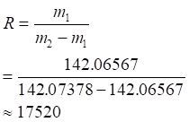
13. 2 分 (3649)
因为分辨率：
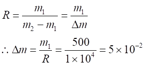
14. 2 分 (3650)
分辨率：
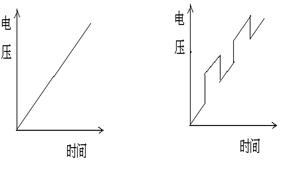
15. 3 分 (3651)
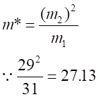
所以子离子的质量数29 CHO＋
母离子的质量数为31 CH3O＋
16. 5 分 (3652)
离子 组成 强度
M＋ 12C35Cl 100
M＋1 13C35Cl 1.11
M＋2 12C37Cl 32.5
M＋3 13C37Cl 0.336
每步一分，组成及强度各0.5分。
17. 2 分 (3653)
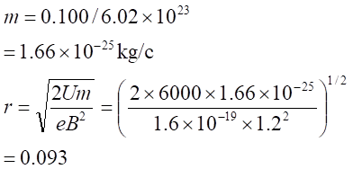
计算中c代表“分子”
公式1分，单位1分，计算1分
四、问答题 ( 共28题 )
1. 5 分 (2516)
[答] 真空系统, 进样系统, 电离室, 加速室, 离子分析器, 检测系统功能。
2. 5 分 (2518)
[答] C6H5COC3H7
3. 10 分 (4007)
[答] (1) UV 光谱lMax 290 nM 有一弱吸收峰为 n → p*跃迁之吸收峰可能为 ＞C = O 基。
(2) MS谱从分子离子峰可知该化合物相对分子质量为 72。碎片离子峰 m/z 为43，结合其它谱分析可能为 CH3C = O
│
(3) IR 谱2800 - 3000 cM-1 为饱合碳氢化合物 -CH3和 -CH2的对称和不对称伸缩振动吸收峰。
1700 cM-1 为 ＞C = O 之伸缩振动吸收峰
1460 cM-1 为 - CH2, - CH3的伸缩和变形吸收峰
1390 cM-1 为 - CH3对称变形振动吸收峰
(4) NMR 谱位于高场的三重峰为端甲基的裂分峰
中场的一重峰为受羰基氧影响的 CH3峰
低场的四重峰为受羰基氧和甲基影响的 - CH2的裂分峰
(5) 据四谱解析可知该化合物为 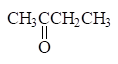
4. 10 分 (4008)
[答] (1) UV 吸收光谱：在 205 nM 以上无吸收，表明这是一个饱和碳氢化合物。
(2) MS 谱m/z= 60 为分子离子峰，该化合物相对分子质量为 60，从m/z=31
的碎片离子峰分析可能为 - CH2OH 。
(3) IR 谱分析
3340 cM-1 附近的吸收峰为 - OH 伸缩振动之强吸收峰。
略低于 3000 cM-1 的吸收峰为饱和 CH 键伸缩振动吸收峰。
2870 cM-1 附近为 - CH3的对称伸缩振动吸收峰。
1460 cM-1 附近为 CH3，CH2伸缩和变形振动吸收峰。
1080 cM-1 附近为 C - O 键伸缩振动之强吸收峰。
(4) NMR 谱
高场上三重峰为端甲基受邻碳上二个质子影响的裂分峰。其边上的多重峰为 端甲基和邻碳质子（亚甲基）影响的裂分峰（因仪器分辨率关系只看到五重峰）。
d＝3.1的单峰为 OH 上质子的吸收峰。
d=3.7 左右的三重峰为受 OH 影响移向较低场的 CH2的吸收峰。
(5) 据四谱解析可知该化合物为：CH3CH2CH2OH （正丙醇）。
5. 5 分 (4025)
[答] 是 A 。
裂解方式 CH3CH2- C - CH2CH3 ─────→
��
O.+
CH3CH2C ≡ O++ .CH2CH3
m/z 57 m/z 29
6. 5 分 (4104)
[答] 是 A 。
裂解方式 CH3CH2- C - CH2CH3 ─────→
��
O.+
CH3CH2C ≡ O++ .CH2CH3
m/z 57 m/z 29
7. 5 分 (4105)
[答] 其规则是：当分子是含偶数或不含N 时，形成分子离子的质量为偶数，含奇数 N 时，形成分子离子的质量为奇数。
氧的存在不会影响上述规则。因为组成化合物的主要元素 C、H、O、N、S 及卤素中，只有 N 的原子量为偶数，而化合价为奇数，因此在含有奇数氮时，才形成奇数质量的分子离子。
8. 5 分 (4106)
[答] CH2N 最符合该数据
四种离子的精确相对质量是：
CH2N： 28.0227
CH2H4： 28.0320
N2： 28.0134
C0 ： 27.9994
9. 5 分 (4108)
[答] 低 m/z值的离子首先通过狭缝。因为 m/z= H2R2/2V， 而半径 R 和电压 V 是常数，通过狭缝的离子的 m/z 值与 B2成正比。
10. 5 分 (4119)
[答] 色谱流出物为组分和载气的混合物，质谱要求较纯的组分，而且真空度较高，
需要用分子分离器，除去大量的载气。
11. 5 分 (4426)
[答] s 键为线条, 表示每个键有两个电子组成. 正离子电荷表示某一个s键中只有一个电子, 方括号表示离子化的部位没有明确指出.
12. 5 分 (4427)
[答] 均裂: H3C-CH3 ─→ H3C・+ ・CH3
异裂: H3C-CH3 ─→ H3C++ :CH3
半异裂: H3C + ・CH3 ─→ H3C+ + ・CH3
13. 5 分 (4428)
[答] 12C12CH6, 12C13CH6, 13C13CH6
14. 5 分 (4429)
[答] 通过麦氏重排产生.
15. 5 分 (4430)
[答] m/z71是分子失去・CH3O,m/z59是分子中失去・C3H7,m/z43是+C3H7, m/z31是CH3O+离子.
16. 5 分 (4431)
[答] 制备成适当的衍生物; 降低轰击能量或使用软电离源.
17. 5 分 (4432)
[答] 因225-211 =14, 211-197 =14, 具有不合理碎片(3-14)质量单位,因此m/z225和 m/z211均非分子离子峰, m/z197是否是分子离子峰则尚待核实.
18. 5 分 (4434)
[答] 酮类化合物易发生a-断裂, 有b-H存在时, 产生麦氏重排峰, 因此, 可产生m/z43, m/z71和m/z58(重排)峰, 此外分子离子峰m/z86有一定强度.
19. 5 分 (4435)
[答] 相对分子质量为奇数, 含奇数个氮原子; M+2:M»3:1, 含1个氮原子, [(M+1)/M]×100≈1.08w, 0.54/17.12 =1.08w/100, ∴w»3. 根据相对分子质量可知该化合物的可能分子式为:C3H4NCl或C2ClNO
20. 5 分 (4436)
[答] 其分子式中含1个硫原子, 不超过9个碳原子.
21. 5 分 (4437)
[答] M和M+2峰为1:1, 指示是一元溴化物. 根据相对分子质量,108-79 =29, 可知分子式 C2H5Br.
[C2H5-Br・+] ─→ ・C2H5 +Br+ 得m/z79, m/z81峰
[C2H5-Br・+] ─→ +C2H5 +・Br 得m/z29峰
22. 5 分 (4446)
[答] Cl
�� a: ��=5.8(1H) 三重峰
CH3CH2CH a b: ��=2.3(2H) 五重峰
c b �� c: ��=1.15(3H) 三重峰
NO2
23. 10 分 (4757)
（1）计算不饱和度为Ω＝1+n4+(n3-n1)/2＝1+2-6/2 = 0 为饱化合物
因仅含一个氧，所以该化合物不是醇，就是醚。因最强峰m/z 31，它是CH2=OH+ 的
碎片离子，是由醇或醚的β- 开裂产生的，因此该化合物为乙醇CH3CH2OH。
（2）此化合物相对分子质量46，最强峰m/z 45，是分子离失去一个氢产生的，此化合物为（1）的异构体，因此为二甲醚 CH3-O-CH3。
24. 10 分 (4758)
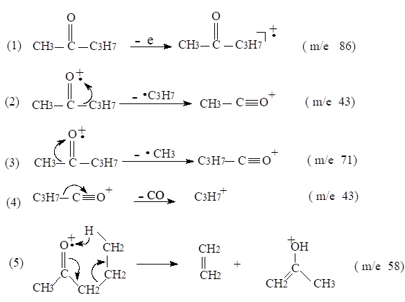
因此该化合物质谱图上出现m/z 86（分子离子峰），m/z 43，71，58（重排离子峰）等离子峰。
25. 10 分 (4759)
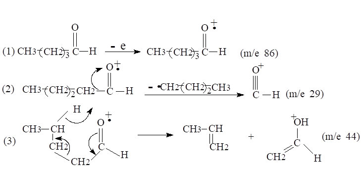
因此，戊醛质谱图上出现 m/z 86（分子离子峰）， m/z 29，m/z 44（重排离子峰）
的离子峰外，尚出现烷烃系列系如：m/z 29，43等。
26. 10 分 (4760)
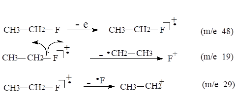
因此质谱图上将出现M/z 48（分子离子峰），M/z 19和29的离子峰。
27. 5 分 (4761)
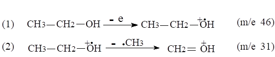
因此乙醇质谱图上除出现M/z 46的分子离子峰外，尚会出现强的 M/z 31离子峰。
28. 10 分 (4762)
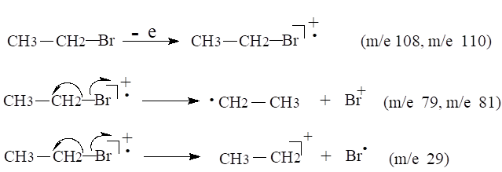
因此在质谱图上除出现m/z 108和110的分子离子峰和同位素离子峰外，尚有m/z 79 和81，29的离子峰，前两对峰强度相等。
29. 5 分 (4763)
从题意可知，该化合物的相对分子质量为73，分子式为C4H11N。从质谱数据可知，该化合物的基峰为44 ，即仲胺经a- 开裂后，生成的碎片离子峰，故该化合物的结构式为 CH3CH2NHCH2CH3。
30. 5 分 (4764)
215－201＝14，因14为不合理碎片离子质量差（3～14质量单位），故M/z 215峰不是分子离子峰。216－215＝1，216－201＝15，因1和15为合理碎片离子质量差，故 m/z 216可能为分子离子峰。采用降低轰击源的能量，若 m/z 216强度增大，则说明 m/z 216为分子离子峰。
31. 2 分 (4765)
可能是因为该化合物的相对分子质量为奇数，根据氮规则，它应含奇数个氮。
32. 2 分 (4766)
M－1，M－2，M－15，M－16，M－17，M－18，M－19，M－20
H H2 CH3 O OH H2O F HF
NH2 NH3
33. 2 分 (4767)
可以知道该化合物的相对分子质量为231，分子中含有奇数个氮原子。
34. 5 分 (4768)
12C35Cl35Cl35Cl M
13C35Cl35Cl35Cl M ＋1
12C37Cl35Cl35Cl M＋2
13C37Cl35Cl35Cl M＋3
12C37Cl37Cl35Cl M＋4
13C37Cl37Cl35Cl M＋5
12C37Cl37Cl37Cl M＋6
13C37Cl37Cl37Cl M＋7
35. 5 分 (4769)
3－氨基辛烷
m/z100相当于从m失去C2H5，m/z 58相当于失去C5H11。3－氨基辛烷的两种可能的α, β开裂后即生成这些离子。4－氨基辛烷的类似应给出M/z 86和M/z 72离子。
36. 5 分 (4770)
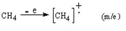
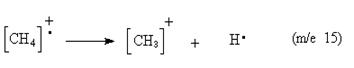
此峰也占相对优势。余下都不是重要碎片，强度较小。
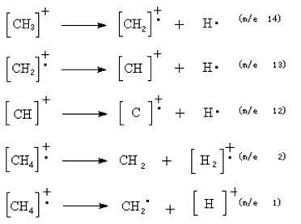
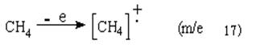
37. 5 分 (4771)
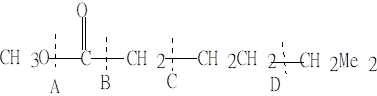
→ 分子离子峰 m/z＝159
A处断 → ＋CO（CH2）4NMz2 m/z＝128
B处断→ CH3OCO＋ m/z＝59
C处断→
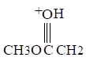
（这个碎片接受 > C＝O的γ氢质子）
D处断→ ＋CH－NMz2 m/z ＝58
38. 5 分 (4772)
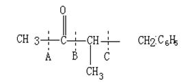
→分子离子峰m/z＝162
A处断裂→ ＋COCHCH2C6H5 m/z＝147
I
CH3
B处断裂→ CH3CO＋ m/z = 43
C处断裂→ ＋CH2C6H5 m/z = 91
39. 5 分 (4773)
由于氮原子是三配位的，因此酰胺M/z的值为奇数。
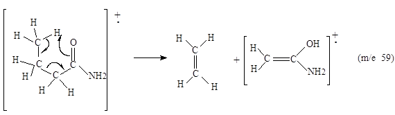
40. 5 分 (4774)
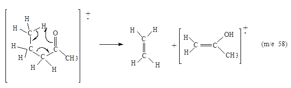
41. 5 分 (4775)
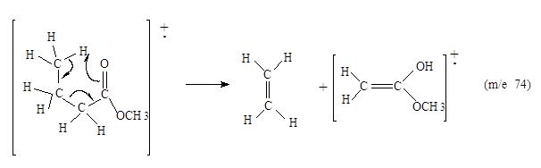
42. 5 分 (4776)
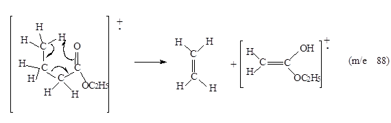
43. 10 分 (4778)
从MS图分子离子峰与碎片离子峰的差值(m/z) 195－80＝115，可知该化合物含有一 个溴原子，194－45＝149表明存在－CO。
从IR谱数据可知存在羰基，结合MS分析可假定这是一个酯羰基。
从NMR谱高场到低场的化学位移值和质子数分析d1.25为端甲基，d1.82 6H单峰应 为磁等价的两个甲基。 d 4.18 2H四重峰应当是酯中烷氧基亚甲基上的两个质子。
据上分析可得出该化合物的结构为：
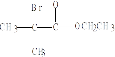
其质谱裂解过程为：
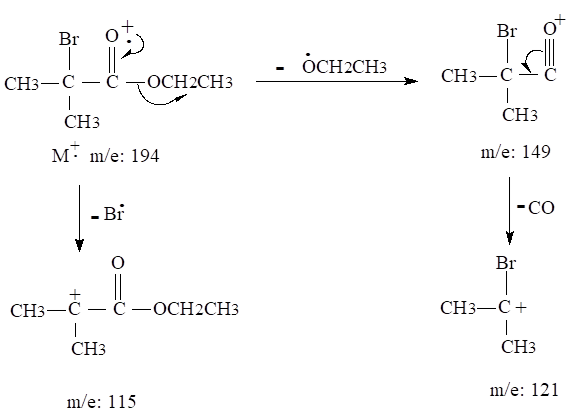
44. 10 分 (4779)
由不饱和度Ω＝4和UV吸收情况可知这是饱和脂肪族化合物。
IR光谱3600cM－1峰和3360cM－1宽峰表明化合物中有－OH基；2940和2840cM－1 及1480和1360cM－1有峰为存在CH3，CH2之类的特征。
NMR在d= 4.1有1H宽峰，d=3.2有2H单峰，d=0.9有9H单峰，表明前者为OH 质子，中间为与－OH相连的C上的质子，后者为三个磁等效的甲基上的质子。
根据上述解析可知该化合物为（CH3）3CCH2OH。
45. 10 分 (4780)
IR光谱在2900～3300cM-1有宽峰，表明有－OH存在，1730和1710cM－1为不同的 羰基出现的特征吸收峰。
NMR谱在d＝11.2处出现1H峰表明这是－COOH中的质子峰（不可能为醛羰基的 H 峰，因为醛羰基的H峰应出现在d=9.5处）， d=7.35H单峰表明这是一取代苯。
IR光谱上的两个羰基一个为酸的，另一个可能是酮的。
MS谱表明 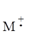
根据上述分析该化合物的结构为：
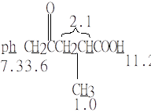 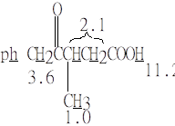
46. 10 分 (4777)
有蒜臭味，可怀疑这是一种含－SH的化合物，如果是这样，相对分子质量（减去S的 相对原子质量）78－32＝46，可以假设剩余的是C2H6O。
从IR谱分析3400cM-1 处强且宽的谱带可估计化合物中有－OH基，1050cM-1有强且 宽的吸收带进一步说明这个化合物为伯醇，约2560cM-1处的弱谱带表明分子中有巯基， 可初步假设该化合物为：HS－CH2CH2OH。
MS谱表示分子离子峰m/z 为78,与IR谱假设的分子式相符,其碎片离子也是可能和合理 的。
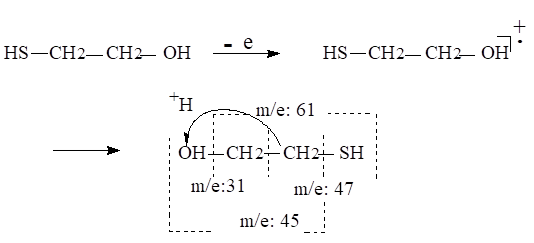
因此,该化合物应为:HS-CH2CH2OH
47. 10 分 (4781)
UV表明该化合物有芳环（因为有222nm Z谱带和254，260，267nM B 谱带精细结构）。
MS的m/z＝77可能为一取代苯环， m/z＝29为乙基，分子离子峰表明M＝122，扣除苯环和乙基，剩余质量数为16，应是O。
IR3000cM-1内外有吸收表明化合物有饱和和不饱和C－H伸缩振动；1450～1600cM-1 有苯环骨架振动；1380cM-1附近有－CH3和－CH2特征吸收；1245cM-1有吸收表明有
－C－O结构存在；700和750cM-1 双峰为一取代苯的特征吸收。
NMR三个不同 d 处质子比为5：2：3，从低到高场表示有一取代苯、亚甲基和甲基。
综上所述，该化合物应是
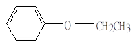
48. 5 分 (4782)
[（M＋1）/ M]×100＝（1.15 /18.5）×100＝0.062×100＝6.2
[（M＋2）/ M]×100＝（0.074 /18.5）×100＝0.004×100＝0.4
因为该化合物相对分子质量为偶数，因此只能含零或偶数氮，C4H8NO和C5H12N可以排除。
在剩下的分子式中，C5H10O与实验结果比较吻合。
49. 5 分 (4783)
（1）可知该化合物的相对分子质量为102 ；
（2）可知该化合物含零或偶数个氮原子；
（3）可知该化合物大约的碳原子数：
（M＋1）/ M×100 ≈1. 08
1.26 / 16.1×100＝1. 08w
w≈ 7
50. 10 分 (4784)
（1）不饱和度为： Ω＝1＋14－10 / 2＝10
（2）质谱图上有苯环的特征系列峰m/z 51、77
（3）由772 /105＝56.5 指出 m/z105－28=77即
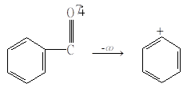
m/z 105 m/z 77
（4） m/z 105刚好是分子离子峰的一半，因此该化合物为一对称结构：
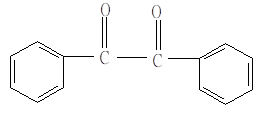
与不饱和度相符。